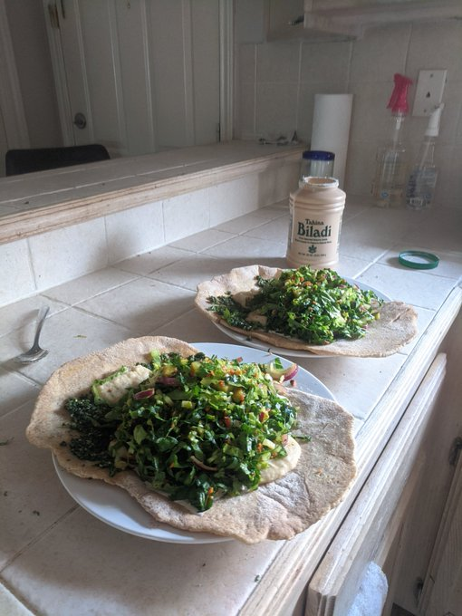

Lebanese Sandwich

Prepare White Bean Sauce in advance!
Make flatbread a few hours before, or bake while making sandwich filling.
Ingredients
Chimichurri
- 6 Tbsp olive oil
- 1/2 teaspoon salt
- 1 small bulb garlic, or amount desired
- 2/3 oz fresh mint
- 1/3 bunch large curly parsley (about 15-20 stems)
Salad (Part 1)
- 3 Tbsp olive oil
- 2 small knobs tumeric
- 1/2 cucumber
Dressing (for salad)
- 1 teaspoon salt
- 4 keylimes
- 12 peppercorns (1/8 teaspoon ground)
- 1 pinch saffron
Salad (Part 2)
- 1/2 bulb small-medium red onion
- 2 small heads romaine lettuce or 1 large head romaine lettuce
Additional Ingredients
- Tahini
- White Bean sauce (see link above to make)
Instructions
Make Chimichurri
- Combine olive oil and salt in small bowl.
- Mince garlic. Combine garlic in bowl mixture.
- Pluck & mince mint with parsley, add to bowl mixture.
- Set chimichurri aside. Let marinade while preparing remaining food.
Prep Salad (Part 1)
- Add olive oil in small bowl.
- Mince tumeric, add to bowl.
- Cut cucumber length-wise on each side to cut out seeded center. Cut into 1-inch cubes, add to bowl.